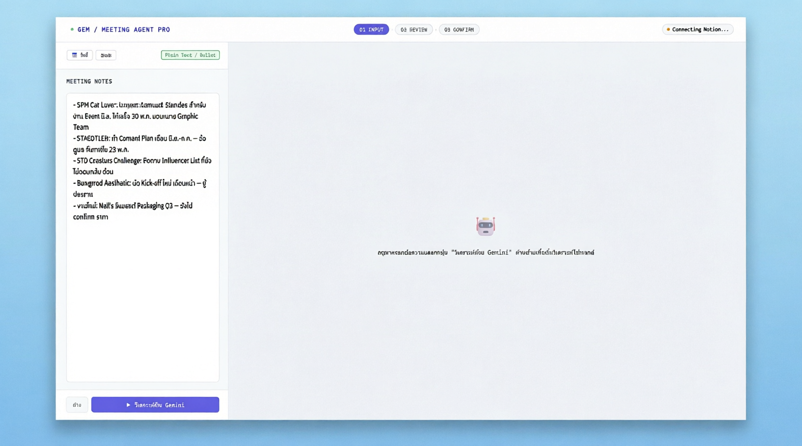
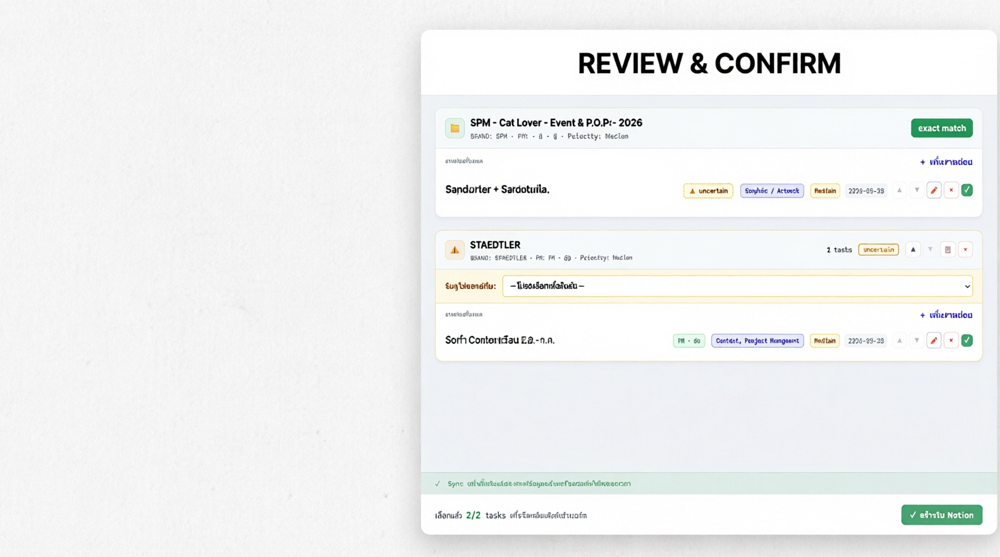
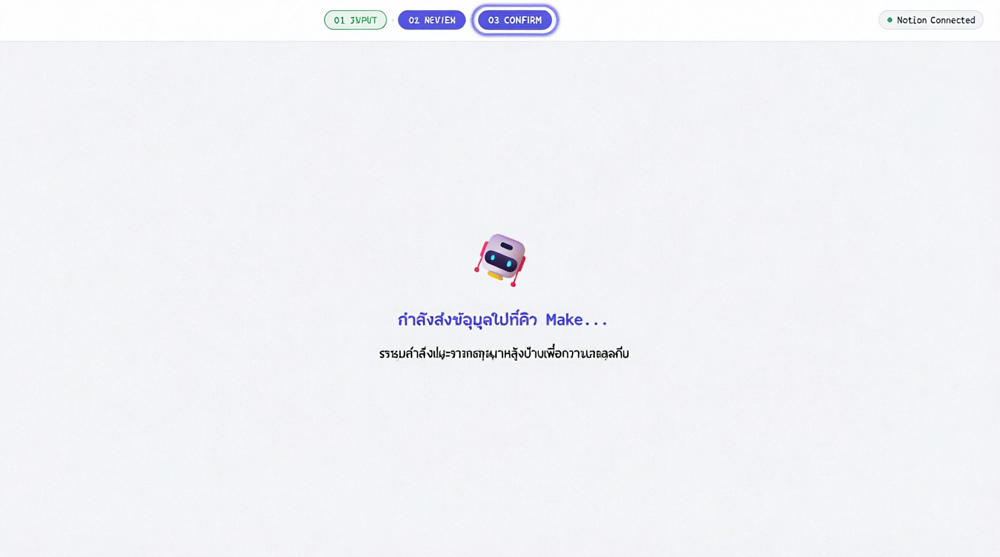
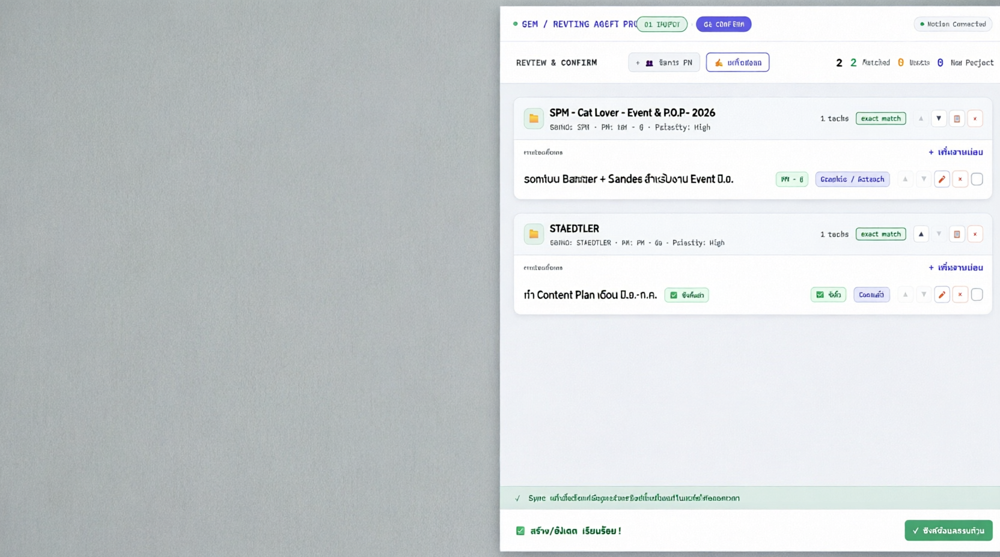
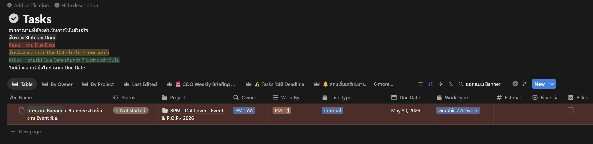
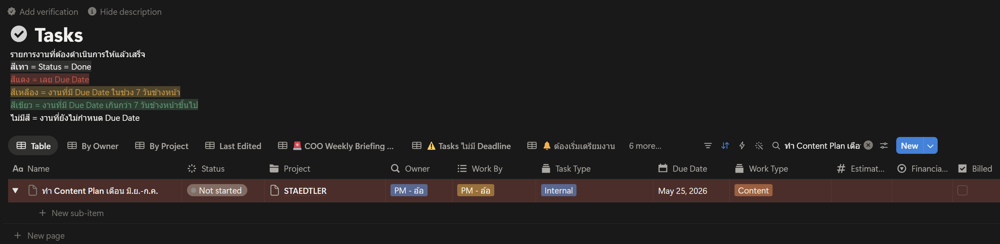

📝
การนำเข้าข้อมูล
01 INPUT
ขั้นตอนแรกคือการป้อนบันทึกการประชุม (Meeting Notes) ลงในระบบ เพื่อให้ AI (Gemini) วิเคราะห์และแยกข้อมูลอัตโนมัติ
🎯 วิธีใช้งาน
- ตรวจสอบการเชื่อมต่อ Notion: ดูมุมขวาบน หากขึ้น
🟢 Notion Connected = พร้อมใช้งาน
- วางบันทึกการประชุม: คัดลอกข้อความสรุปการประชุม (Plain Text / Bullet points) ลงในช่อง MEETING NOTES ด้านซ้าย
- กดปุ่มวิเคราะห์: คลิกปุ่ม "▶ วิเคราะห์ด้วย Gemini" สีม่วงด้านล่าง
- รอระบบประมวลผล: AI จะแยกโปรเจกต์, ผู้รับผิดชอบ, วันส่งงาน, ประเภทงาน ให้อัตโนมัติ
💡 Tip: ระบบรองรับทั้งภาษาไทยและอังกฤษ สามารถใช้ bullet points แบบ -, •, หรือ * ได้

📸 ภาพที่ 1: Step 01 INPUTหน้าจอการกรอก Meeting Notes และปุ่มวิเคราะห์ด้วย Gemini
กรุณาแทรกรูปภาพ: step1_input.png ';">
📸 ภาพที่ 1 — หน้า 01 INPUT: ช่องกรอก Meeting Notes และปุ่มวิเคราะห์
🔍
การตรวจสอบและแก้ไขข้อมูล
02 REVIEW
หลัง AI วิเคราะห์เสร็จ ข้อมูลจะแสดงที่แผงขวา คุณต้องตรวจสอบความถูกต้องก่อนส่งเข้า Notion

📸 ภาพที่ 2: Step 02 REVIEWหน้าจอแสดงโปรเจกต์ที่ AI วิเคราะห์ได้ พร้อมสถานะ exact match และ uncertain
กรุณาแทรกรูปภาพ: step2_review.png ';">
📸 ภาพที่ 2 — หน้า 02 REVIEW: แสดงโปรเจกต์ SPM (exact match) และ STAEDTLER (uncertain)
🏷️ สถานะการจับคู่โปรเจกต์ (Match Status)
Exact Match — ตรงกัน 100%
🟨 Uncertain — คล้ายกัน ต้องเลือก
🟪 New Project — โปรเจกต์ใหม่
✏️ การจัดการข้อมูล
- แก้ไขรายโปรเจกต์: กดปุ่ม "✍️ แก้ไขข้อมูล" ด้านบน
- แก้ไขรายงานย่อย: กดไอคอนดินสอ ✏️ หลังงานนั้นๆ
- เพิ่มงานย่อย: กด "+ เพิ่มงานย่อย" ใต้โปรเจกต์
- ลบงาน: กดปุ่ม × สีแดง (มี Undo)
- จัดการ PM: กด "👥 จัดการ PM" เพิ่มรายชื่อทีมงาน
⚠️ งานที่ยังไม่ได้มอบหมาย: หากงานย่อยไม่มีผู้รับผิดชอบ จะขึ้นป้าย "⚠️ รอมอบหมาย" สีส้ม ควรใส่ชื่อก่อนซิงค์
⏳
ระหว่างประมวลผล
PROCESSING
เมื่อกดปุ่ม "สร้างใน Notion" ระบบจะส่งข้อมูลผ่าน backend เพื่อความปลอดภัย ห้ามปิดหน้าต่างระหว่างนี้

📸 ภาพที่ 3: Processing Stateหน้าจอแสดงสถานะกำลังส่งข้อมูลไปยัง Make.com
กรุณาแทรกรูปภาพ: step3_processing.png ';">
📸 ภาพที่ 3 — หน้า Processing: "กำลังส่งข้อมูลไปที่คิว Make..."
🚀
การยืนยันและซิงค์
03 CONFIRM
เมื่อตรวจสอบข้อมูลเรียบร้อย กดปุ่มซิงค์เพื่อส่งข้อมูลเข้า Notion
✅ ขั้นตอนการซิงค์
- เลือก Tasks: ติ๊กเครื่องหมาย
✓ หลังงานที่ต้องการส่ง (สามารถเอาออกได้หากยังไม่อยากส่ง)
- กดปุ่มซิงค์: คลิก "✓ สร้างใน Notion" สีเขียวมุมขวาล่าง
- รอระบบดำเนินการ: ห้ามปิดหน้าต่าง! จะแสดงสถานะ "กำลังส่งข้อมูล..."
- ตรวจสอบผล: เมื่อสำเร็จจะขึ้นแถบเขียว "✅ สร้าง/อัปเดต เรียบร้อย!"
- ยืนยัน: ป้ายหลังงานจะเปลี่ยนเป็น "✅ ซิงค์แล้ว"

📸 ภาพที่ 4: Step 03 CONFIRMหน้าจอแสดงการซิงค์ข้อมูลสำเร็จ
กรุณาแทรกรูปภาพ: step4_confirm.png ';">
📸 ภาพที่ 4 — หน้า 03 CONFIRM: แสดง "✅ ซิงค์แล้ว" และ "✅ สร้าง/อัปเดต เรียบร้อย!"
🎉 สำเร็จ! ข้อมูลทั้งหมดถูกส่งเข้าไปจัดเรียงใน Notion อย่างเป็นระเบียบเรียบร้อย หากพบข้อผิดพลาดหลังซิงค์ สามารถแก้ไขแล้วกดอัปเดตซ้ำได้
📊
ผลลัพธ์การทำงานจริงใน Notion
SUCCESS
✅ งานที่สร้างสำเร็จใน Notion Tasks Database
หลังจากกดปุ่ม "สร้างใน Notion" ระบบจะสร้างงานตามข้อมูลที่ได้จากการวิเคราะห์ ดังนี้:

📸 ภาพที่ 5: Notion Task 1หน้าจอ Notion แสดงงานออกแบบ Banner + Standee
กรุณาแทรกรูปภาพ: notion_task1.png ';">
📸 ภาพที่ 5 — ผลลัพธ์ใน Notion: Task "ออกแบบ Banner + Standee"
🎨 Task 1: ออกแบบ Banner + Standee
| ฟิลด์ | ค่า |
|---|
| ชื่องาน | ออกแบบ Banner + Standee สำหรับงาน Event มิ.ย. |
| สถานะ | ⚪ Not started |
| โปรเจกต์ | 📁 SPM - Cat Lover - Event & P.O.P.- 2026 |
| เจ้าของงาน (Owner) | 👤 PM - อ้อ |
| ผู้ปฏิบัติงาน (Work By) | 👤 PM - ยู่ |
| ประเภทงาน (Task Type) | 🏷️ Internal |
| วันครบกำหนด (Due Date) | 📅 May 30, 2026 |
| ลักษณะงาน (Work Type) | 🎨 Graphic / Artwork |

📸 ภาพที่ 6: Notion Task 2หน้าจอ Notion แสดงงานทำ Content Plan
กรุณาแทรกรูปภาพ: notion_task2.png ';">
📸 ภาพที่ 6 — ผลลัพธ์ใน Notion: Task "ทำ Content Plan"
📝 Task 2: ทำ Content Plan
| ฟิลด์ | ค่า |
|---|
| ชื่องาน | ทำ Content Plan เดือน มิ.ย.-ก.ค. |
| สถานะ | ⚪ Not started |
| โปรเจกต์ | 📁 STAEDTLER |
| เจ้าของงาน (Owner) | 👤 PM - อ้อ |
| ผู้ปฏิบัติงาน (Work By) | 👤 PM - อ้อ |
| ประเภทงาน (Task Type) | 🏷️ Internal |
| วันครบกำหนด (Due Date) | 📅 May 25, 2026 |
| ลักษณะงาน (Work Type) | 📄 Content |
📈 สรุปผลการดำเนินงาน
2
Tasks ที่สร้าง
2
Projects
100%
มอบหมายงาน
100%
มี Deadline
✅ ระบบ Color Coding ทำงานอัตโนมัติ:
- 🔴 สีแดง = เลย Due Date
- 🟡 สีเหลือง = Due Date ใน 7 วันข้างหน้า
- 🟢 สีเขียว = Due Date เกิน 7 วันขึ้นไป
- ⚪ ไม่มีสี = ยังไม่กำหนด Due Date
🏷️
คำอธิบาย Badge และสถานะ
| Badge / สถานะ |
ความหมาย |
การดำเนินการ |
| 🟩 Exact Match |
ชื่อโปรเจกต์ตรงกับ Notion 100% |
พร้อมซิงค์งานย่อยได้เลย |
| 🟨 Uncertain |
คล้ายกับโปรเจกต์เดิม แต่ไม่แน่ใจ |
เลือกจาก Dropdown หรือสร้างใหม่ |
| 🟪 New Project |
โปรเจกต์ใหม่ไม่เคยมีในระบบ |
ระบบจะสร้างหน้าใหม่ให้ใน Notion |
| ⚠️ รอมอบหมาย |
งานย่อยไม่มีผู้รับผิดชอบ |
ควรใส่ชื่อก่อนซิงค์ |
| ✅ ซิงค์แล้ว |
งานถูกส่งเข้า Notion สำเร็จ |
ไม่ต้องดำเนินการเพิ่ม |
💡
ตัวอย่างและเคล็ดลับ
📝 รูปแบบบันทึกการประชุมที่แนะนำ
- SPM Cat Lover: ออกแบบ Banner + Standee สำหรับงาน Event มิ.ย.
ให้เสร็จ 30 พ.ค. มอบหมาย Graphic Team
- STAEDTLER: ทำ Content Plan เดือน มิ.ย.-ก.ค. — อ้อดูแล
ส่งภายใน 25 พ.ค.
- STD Creators Challenge: ติดตาม Influencer List ที่ยังไม่ตอบกลับ
ด่วน
- Bangmod Aesthetic: นัด Kick-off ใหม่ เดือนหน้า — ยู้ประสาน
- งานใหม่: Neil's รีแบรนด์ Packaging Q3 — ยังไม่ confirm ราคา
📌 เคล็ดลับการเขียน Notes
- ✅ ระบุชื่อโปรเจกต์ให้ชัดเจน (เช่น SPM Cat Lover, STAEDTLER)
- ✅ ใส่ชื่อผู้รับผิดชอบหลังเครื่องหมาย
— หรือ :
- ✅ ระบุวันส่งงานชัดเจน (30 พ.ค., 25 พฤษภาคม 2026)
- ✅ แยกงานย่อยด้วย bullet points
- ✅ ระบุประเภทงานถ้าเป็นไปได้ (Graphic, Content, Event)
🔧 ฟีเจอร์พิเศษ:
- + Project ใหม่: สร้างโปรเจกต์ใหม่ด้วยตนเอง
- 👥 จัดการ PM: เพิ่ม/แก้ไขรายชื่อผู้รับผิดชอบ
- 🔄 เลิกทำ (Undo): เรียกคืนงานที่ลบผิด
- Auto Detect: ตรวจจับวันและชื่อคนอัตโนมัติ
🎯 ประโยชน์ที่ได้รับ:
- ⚡ ประหยัดเวลา - ลดเวลาการคีย์งานจาก 15-20 นาที เหลือ 2-3 นาที
- 🎯 ความแม่นยำ - AI ช่วยแยกแยะข้อมูลได้ถูกต้อง
- 📋 ความเป็นระบบ - งานถูกจัดระเบียบใน Notion พร้อมติดตามผล
- 🔔 การแจ้งเตือน - ระบบ Color Coding ช่วยเตือนงานเร่งด่วน